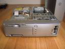
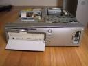
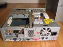
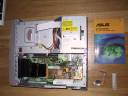
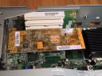

Building Your Own Linux Based Audio Component
by: Bryn Dole ( dole @ atomicwidget . com )
Introduction
One day I decided I needed a Linux based stereo component to unify all
my music. I NEEDED it you see. I'd been reading slashdot's
occasional
articles on music and MP3 devices. I've had discussions with
friends and co-workers that all dream the same dream. I've heard and
read about people building similar machines, but none just like I
wanted. Is it possible to will such a device into being? Here is the
chronicle of my project to build the ultimate Linux audio device.
Feature list
Every product needs a list of features:
- Linux based for stability, access to tools (grip, WinAmp for Linux, NFS, SAMBA, KDE, Konqueror, ssh, etc.)
- Play music: MP3, wav, Ogg, audio CDs, mp3 cds, streamed MP3s
- Rip music CD-ROMs
- Create music and/or MP3 CDs
- Network access - remote NFS and SAMBA mounting of disks with music, gnutella access
- Small cool looking case
- Quiet
- High fidelity sound card - RCA and optical out, very low signal to noise ratio ( > 90db)
- TV-Out so it can be integrated into my entertainment system without an extra monitor
- Wireless keyboard/mouse/remote
- Much Storage - enough for several hundred CDs of music with lossless compression, and additional MP3s, Ogg, from the net.
Pipe dream features:
- TV-tuner
- Video in recorder
- TiVo like PVR features
- DVD ripping w/ DivX and MPEG-4 encoding
I passed on building the next generation TiVo. After all, I already
have a DVD player and a TiVo. Both work great, and I don't NEED
a Linux PVR/DVD-ripper (yet). That and the DVD-RW drive was going to
add to the overall price. When the price drops, I'll swap out the CD-RW
with a DVD-RW and add the necessary software. I may do this soon...
Components
My shopping list:
- High fidelity sound card [MidiMan Delta DiO $300]
- Decent CPU speed - enough for trip'n WinAmp visualizations [900 MHz Celeron $75]
- Graphics card w/ TV-out & Linux support - [NVIDIA GeForce2 MX-400 GPU $115]
- Memory - is cheap! [128MB SDRAM $25]
- Compact and Cool looking case [FIC Sabre 1815 $270]
- Baby ATX motherboard with onboard 100Mb Ethernet [ incuded with the FIC Sabre $0]
- Disk Drive [60GB $80]
- CD-RW [$90]
Total cost: $955
Prices are circa Dec 2001
Software
You have to have software. The less coding the better, so I stitched
together a whole host of available software.
- Linux RedHat
7.2 8.0
- KDE/GNOME
- ssh
- nfs
- samba
-
WinAmp for Linux XMMS w/ ALSA, flac, and crossfade plugins
- ALSA drivers for MidiMan sound card
My original plan was to use WinAmp for Linux displayed to the TV-Out
as the primary UI. The thought of parties where my guests choose
their own music, kick back, and watch the trippy WinAmp visualizations
gets me tingly. I used to work with Keith Peters, the coding god, who
did the Linux port of WinAmp 3. However, WinAmp 3 requires a dual
processor 2.5GHz Xeon processor system to run its bloated GUI, so I'm
going with XMMS instead.
XMMS has matured since I started this project and the ALSA integration
is much better now.
Sorting Out the Details
The first part I started looking for was the sound card. I've been
listening to MP3s and CDs on computers for years and the one unifying
element was that the audio sucked. The sound was awash with noise,
hiss, buzz, pops, etc. My Sun Ultra2 was so bad you not only heard the
disk drive through the headphone jack, you could actually hear the
mouse move across the screen. As the framebuffer's contents changed
the buzz in the headphones would buzz and pop as windows gained and
lost focus. If I was going to hook this into my stereo there was going
to be zero tollerence for noise. So I did my reaserch, I found this sound card
comparison. I went through the list looking for a card that showed
up on the ALSA
soundcard compatibility list. I checked out the online
specifications for some of the boards listed on the ALSA page and did
extensive Googling for sound card reviews. I
also discovered that optical digital out was available, which
instantly got added to the "must have" feature list. In the end I
narrowed my choices down to several MidiMan cards and one from RME.
Other contenders included several boards from Turtle
Beach.
It was not until after I purchased my card that I found a good How-To
guide on Linux Audio
Quality. This site has good suggestions for fixing your current
audio card and shopping for a good one. Most of the information is
aimed at getting the most of of cheap audio cards.
1U is Not 4ME
The next item on the list was a good looking case. My first impulse
was to get a 1U case: rackable computing in your den. After
researching 1U cases I realize several severe limitations of the 1U
format. There is only space for at most one PCI card, which requires a
L-shaped addapter so the card lays flat. I was probably going to need
two cards: 1 sound and 1 video w/ TV-out. Other negatives were: cost,
limited number of available motherboards, and while very flat, 1U cases
are wide and long. Less than ideal for installing in my home entertainment
center.
Small Packages
I ultimately decided to go with the mini-tower. I wasn't happy about
this but I wanted to get started and a mini tower would have the space
and flexability to allow me to install my PCI cards, find an
inexpensive motherboard, and work out the kinks. So I headed to
Fry's. That is when fate intervened. I discovered a small silver case,
motherboard included in about the same form factor as a small VCR. The
FIC
Sabre 1812 had everything I needed right on the mainboard:
Ethernet, AGP-VGA, Sound, and IDE. Things only got better after I got
home and discovered that its BIOS allowed for netboot via the PXE
protocol. The bootloader GRUB that comes with RedHat 7.x supports
netboot using PXE, allowing me to turn my machine into a diskless terminal/device.
If you don't like GRUB, I found another Linux bootloader called
SYSLINUX.
The build quality on the Sabre blew me away. Tolerances were tight,
very tight, and everything fit just right (except my oversized PCI
video card, that forced my to kick out the drive and go diskless). The
case came with specially cut/wrapped/shaped cables. I haven't seen a
compact case fit together so well since I opened an old Sun IPX cube.
The downside to the Sabre is the BIOS. For some reason the power
button is flaky, and seems to alternate between power-off and
standby. It also seems to frequently boot-up without recognizing the
PCI nVidia card I installed.
| The FIC Sabre 1812 Case |

Front View |

Front View |

Back View |

Top View |
The other case I considered was the Shuttle
SV24 Barebones. The pros were built in S-video and composite video
out, more space in the case and its aluminum exterior. The Cons were:
only one PCI slot that requires a L-shaped adapter, unknown support for
the TV-out under Linux, and it is the wrong shape to stack with my
stereo, DVD player, and TiVo.
The other alternatives were custom built boxes like the GCT-ALLWELL. Anders
Brownworth is already building just such a MP3 device
using the GCT-AllWELL.
Motherboards
A small case necesitates a small motherboard. I needed as many features as
possible on the motherboard because PCI and AGP cards take
up space. ATX and baby ATX boards were the way to go. Thankfully with
the popularity of 1U and 2U servers, there are plenty of feature
packed motherboards to choose from. Ethernet was a must. Sound and
video were nice to have. On board sound was never going to cut it for
my quality requirements on the sound output, and finding onboard
TV-out was pretty rare. Finding a TV-out with Linux support proved
impossible.
My case selection (the FIC
Sabre 1812) made my motherboard choice for me. The onboard AGP
VGA, and sound were a waste for me. I was installing my high-end audio
card and needed TV-Out, so I disabled the onboard sound and video
via the BIOS. Other people might have different needs. I used the
onboard VGA and sound during my initial installs. Both worked great without any
hassles at all using the standard RedHat 7.2 install.
Side Note on RH 7.2
Not that RH7.2 didn't create problems, somehow my first install
attempt left out rpm, as in the rpm binary! Upgrading was impossible,
so I reinstalled with different packages and things got better. Why
is lynx left out of the WWW/Mail RPM group? Why is mrtg installed into
the /etc/crontab by default? What kind of crack are they smoking at RH these
days. On top of that they foo'd up thier up2date system. <end rant>
CPU and Memory
Thanks to the ever plummeting cost and ever increasing speed of CPUs,
this was an easy decision. I originally planned to get a 500MHz
Celeron, but got talked into the 900MHz one by the sales guy
at Fry's. So I shelled out a whopping $75 bucks instead of $45. The
upside is the 900MHz Celeron uses a 100MHz frontside bus instead of
66MHz. Overkill for MP3, but allows for faster MP3/OGG encoding and
possible future video capture.
Likewise for memory: $25 buys you a 128MB SDRAM PC100 DIMM. No reason
to settle for less, or to need more.
Video
Because I don't want to be tethered to my computer to play music and I
wanted my Linux Audio Component to be completely integrated into my
entertainment center, I decided the system should display through the
TV. While there are a number of video cards that now support TV-Out,
as a discovered few support TV-Out using Linux Video drivers. In fact,
I only found one such card, the nVidia GeForce2 MX series. Depending
on the manufacturer (there are several that use the nVidia GeForce2
chip-set) and the model. The GeForce2 "MX DH" and "MX400" usually have
TV-out.
|
I found the right nVidia card the Asus
V7100 PRO/T 32MB MX-400 PCI Video Card w/TV-Out at Googlegear.com
for $99. This card is a half-height card and fits into the third
half-height slot in the Sabre's case. It is also shorter than the ATI
all-in-wonder, leaving room to reinstall the hard drive if I so
choose. I haven't decided whether to re-install the HD or not, the
net-boot is fast and reduces the noise and heat.
|

GeForce2 MX 400 Installed |
I tried for aver a week to get the nVidia supplied drivers to install
and work under RedHat 7.2. The prepackaged RPMs that nVidia supplied
were all broken, it looks like they compiled with the wrong kernel
source tree. I downloaded the nVidia source and got that to install,
after the usual headaches. However, TV-out was Dead on Arrival. If I
tried to start X with TV-out enabled, the whole system would
freeze. Not just X, the kernel would give itself a big wedgie, without
so much as an error message. Maybe because I'm using PCI and not AGP,
or maybe because nVidia's Linux drivers just suck.
I was about to give up on TV-out when I discovered a stand alone
tool that will set the TV-out mode on nVidia drivers. The nVidia
TV-out control can be found at http://sourceforge.net/projects/nv-tv-out/.
You can even run the application from the command line and include it
in the init scripts. There is full support for NTSC, NTSC-J, PAL,
etc. I've only tested the NTSC mode. While the display isn't perfect
(hey its TV after all), the main problem is finding a mode that
maximizes pixels and minimizes the wasted space around the edge of
the X windows screen. For some reason the unused regions above and
below the video is hot pink.
How NOT to get TV-out working
Failed method 1
My first attempt at TV-out under Linux was with a very expensive ATI Radeon All-in-Wonder
card. I've been pretty loyal to ATI after a long string of ATI cards working in the last
three Linux boxes I built. However, while it worked great as a graphics card, I could get not
TV signal. As soon as Linux started booting, poof, the screen would get all jangly. After
more extensive Googling, I found ATI's Linux driver page. The ATI FAQ says it all:
Is TV Out support available for ATI products under Linux?
ATI is investigating the possibility of supporting TV Out under
Linux. Please refer back to this web page to keep up to date on
developments regarding TV Out support.
Failed method 2
I'm including this information in hopes that one day nVidia will fix
its drivers and this may be of help to someone. For now, use the
nvtv application I mention above.
Here is the nVidia
TV-out How-To from Linuxhardware.org. This How-To is slightly out of
date. For the latest information consult the official documentation on
how to install the nVidia drivers from the nVidia web site.
Here is the Linux text
documentation and the pdf
documentation from nVidia.
Audio Drivers
Choosing the MidiMan
Delta DiO 2496 meant that I no longer had
pre-compiled/pre-configured sound support in the kernel. I was going
to need to install the ALSA
sound drivers and OSS emulation libraries. The "e;stable"e;
version of the ALSA drivers is at 0.5.x, but this code is ancient,
most of the support for the ICE1712 chip (in the MidiMan cards) only
appears in the 0.9.0beta10 drivers. Don't bother with the old 0.5
version, and use the 0.9.x version.
Building ALSA is pretty easy. Its the standard: ./configure; make;
make install process. Documentation is scarce and most has not been
re-written since the 0.5 version of the divers. The
best resource for installing ALSA is at: Planet
CCRMA at Stanford university. I found this site too late, but this site
has already documented most of the pitfalls that I had to work through the
hard way.
Update: The ALSA 0.9 branch is now the official stable release!
Here is a good link for getting ALSA installed: Installing
and configuring ALSA, JACK, & Ardour I found the best way was to
download the source packages yourself and make and install them.
Barely Documented ALSA
There are several fixes you need to implement to run ALSA and the ALSA
OSS emulation smoothly. For instance you'll want to load the ALSA
devices and modules automatically at boot time. So you'll need to
install the /etc/init.d/alsasound script into /etc/rc.d/rc5.d/ and
made the modifications mentioned in this
patch message. Another item is to edit your /etc/rc.d/rc.sysinit file
and remove the standard sndconfig call that might munge some of you sound
settings. Comment out the following lines:
if [ -n "$PNP" -a -f /proc/isapnp -a -x /sbin/sndconfig ]; then
/sbin/sndconfig --mungepnp >/dev/null 2>&1
fi
I'm still having issues with permissions of /dev/dsp0, /dev/audio0,
and /dev/mixer0/. OSS emulation only works for root, until I go
through and change the permissions to be read-writable by the user.
Just a matter of automating this...
Storage
I purchased a 5400rpm 60GB drive from Fry's for $80. I chose the
slower drive speed because it generates less heat and it was
cheaper. This is enough storage for about 70+ CDs in raw wav
format. Using FLAC (Free
Lossless Audio Codec) I can double that to about 140+ CDs worth of
data. My legacy MP3s and Ogg files will be mounted via NFS from my
main Linux machine in my home office.
Software
Now its just a matter of glueing it all together with software.
XMMS
I wanted to use Linux WinAmp, but currently it too unstable. So I opted for
the best alternative: XMMS.
XMMS plugins
I now have the ALSA, FLAC, and crossfade plugins installed and working with XMMS.
Because I use KDE wich comes with aRts installed. I installed the
aRts XMMS output module available in rpm
or source
form. Now I can hear KDE sound events while playing audio.
I've yet to start playing with the many other XMMS modules....
KDE
This is a work in progress. More to come...
Sound Formats
Existing Commercial Products
Here is a list of similar commercial products I've discovered:
- AudioReQuest ARQ2 Pro cost ??
- Rio Advanced Digital Audio Centee for $1499.95
- ZapMedia Station for $1499
- HP de100c for $999.99
- Bokks for $499
- Audiotron for $299.95
- Rio Digital Audio Receiver for $199.95 (requires a PC to host music) [review]
The feature sets of these products is quite varied. A common theme is
small hard drives and dependence on an external windows machine to
adminster and rip music. The ARQ2 is your high end, "e;money is no
object"e; version for those who wish to outsource the ripping of
their CD collection.
Conclusions
In theory, building a Linux audio component is easy (at least
according to half the posters on Slashdot). However, I chose several
design elements that made it more challenging: 1. a very small form
factor 2. high-fidelity audio 3. TV-out for display. Eliminating these
requirements would have made my life a lot easier. But then I might as
well listen to my music through a set of crappy little
speakers. Compromise was not an option.
I hope that the information here helps others build their own Linux Audio
Devices. If you do, email me. (see above for email)
TODO list
- Buy a new receiver/stereo with more video-in/out, S-video, and digital audio connectors. I'm maxed out!
- Download install FLAC and FLAC XMMS module
- Convert .wav files to FLAC format (50% space savings)
- Investigate remote control options (IR, RF, etc)
- Investigate web control interface.
- Investigate IR remote contol options.
- Try to get Linux WinAmp working.
Resources and Links
I kept my web research organized in my Dmoz.org Bookmarks. The latest Linux news from Topix.net.
by: Bryn Dole ( dole @ atomicwidget . com )
Last modified: Sun Mar 21 00:05:49 PST 2003
{kind=link}
{kind=link}
{kind=link}
{kind=link}
{kind=link}